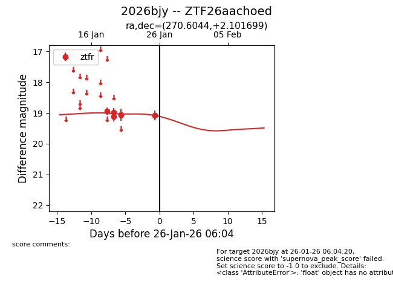
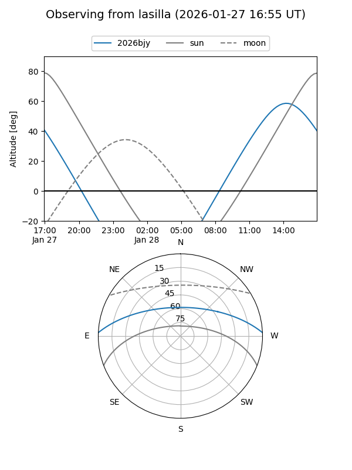
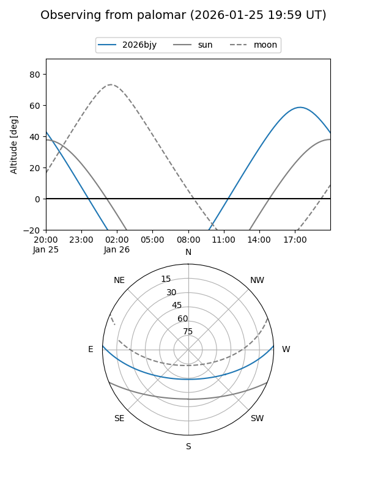
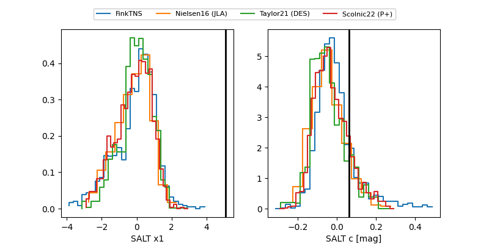

2026bjy
Target 2026bjy at 2026-01-26 06:06
Aliases and brokers:
FINK: link
Lasair: link
ALeRCE: link
TNS: link
YSE: link
alt names
ZTF26aachoed (ztf,fink_ztf)
2026bjy (tns,yse)
Coordinates:
equatorial (ra, dec) = 270.6044,+2.10170
equatorial (HMS+DMS) = 18:02:25.06,+02:06:06.12
galactic (l, b) = (29.1774,+11.85923)
Flags:
Photometry:
last ztfr=19.08
7 ztfr detections
Lightcurve

Visibility


Additional plots
